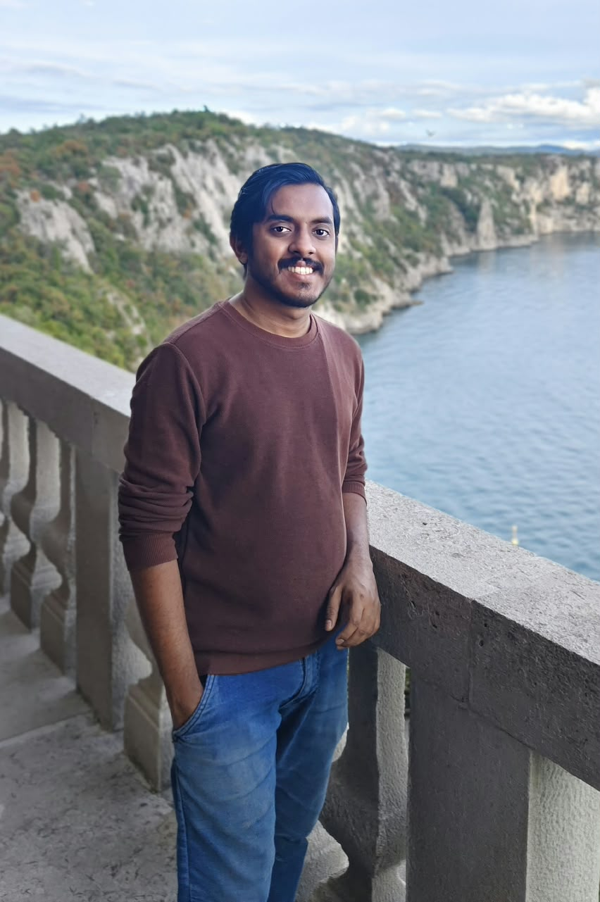

I am a PhD student in Astronomy at the Indian Institute of Technology Indore, working with Dr. Priyanka Singh. My research explores the connection between circumgalactic medium (CGM) and active galactic nuclei (AGNs) using insights from X-ray observations.

I am a doctoral researcher in Astronomy at IIT Indore, supervised by Dr. Priyanka Singh. I study how active galactic nuclei (AGN) occupy dark matter halos and how the baryonic feedback affects the contents of the CGM.
My broader interests include the distribution of baryons around galaxies, with the aim of understanding the flows of matter and energy that shape galaxy evolution.
For research enquiries and collaboration:
phd2401121006@iiti.ac.in
thomasgeorgep30@gmail.com
LinkedIn profile ↗
Department of Astronomy, Astrophysics and Space Engineering
Indian Institute of Technology Indore, India
My current work uses cross-correlations of eROSITA X-ray AGNs and DESI data to investigate the halo occupation distribution of AGNs. I am also interested in the circumgalactic medium and the cosmic distribution of baryons.